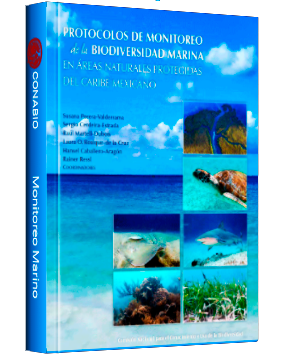
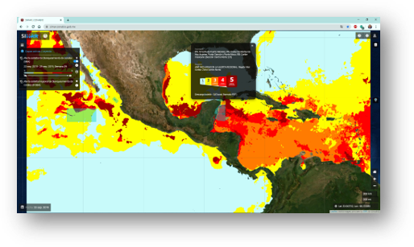
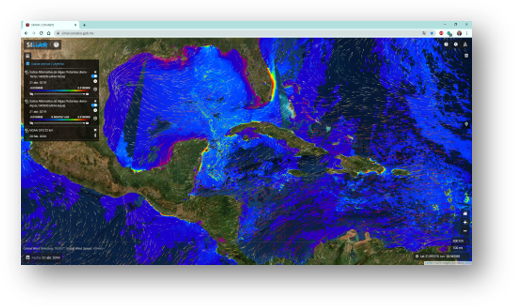
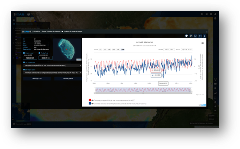
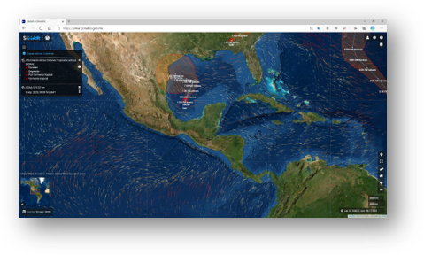

Protocolo de Monitoreo de la Biodiversidad Marina en Áreas Naturales Protegidas del Caribe Mexicano Para Arrecifes Coralinos, Pastizales Marinos, Manglares, Tortugas marinas, Tiburones y Rayas
BioCARIBE Base de datos del programa de monitoreo de la biodiversidad marina en ANP del Caribe mexicano

SATsum
Sistema satelital de alerta temprana de Sargazo
Un explorador Web que contribuye a una responsable y precisa toma de decisiones de comunidades y gobiernos,
mediante la operación de sistemas de alertas tempranas:
Blanqueamiento de corales
Sargazo pelágico
Florecimientos algales fitoplanctónicos
Condición ecológica de los ecosistemas marino costeros


Un explorador Web que constituye una contribución clave a las siguientes iniciativas internacionales:
El logro de los Objetivos de Desarrollo Sostenible (ODS) de las Naciones Unidas, en particular el ODS14-Vida bajo el mar.
El Decenio de las Naciones Unidas de las Ciencias Oceánicas para el Desarrollo Sostenible (United Nations Decade of Ocean Science for Sustainable Development, 2021-2030).
Las Metas de Aichi (Meta 10 - eje 1. conocimiento).
El Convenio sobre la Diversidad Biológica (CDB).
La Plataforma Intergubernamental Científico-Normativa sobre Diversidad Biológica y Servicios de los Ecosistemas (The Intergovernmental Science-Policy Platform on Biodiversity and Ecosystem Services, IPBES)
El Convenio para la Protección y el Desarrollo del Medio Ambiente Marino en la Región del Gran Caribe (Wider Caribbean Region, WCR) (Convenio de Cartagena).
El Acuerdo de París sobre cambio climático.


SIMAR es un explorador que incorpora un centro de datos
multiescalares derivados de muestreos y monitoreos in situ, de observaciones satelitales,
de modelos climáticos e información geoespacial.
Integra además algoritmos y herramientas tecnológicas de percepción remota que permiten estudiar los cambios en los ecosistemas marino y costero a corto y largo plazo, mediante herramientas de análisis de series de tiempo y sistemas operacionales de alertas tempranas para la toma de decisiones sobre conservación y el uso sostenible de la biodiversidad marina y costera de comunidades y gobiernos, en un contexto de cambio y variabilidad climática.